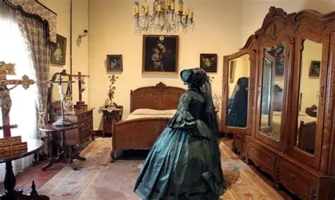

En la ciudad de Querétaro, sobre la calle de la Independencia, se erige una imponente mansión colonial que guarda uno de los crímenes más atroces de la historia mexicana. A mediados del siglo XIX, llegó a esa casa una mujer proveniente de Zacatecas, acompañada de su esposo, un hombre de negocios acaudalado pero ausente debido a sus constantes viajes.
La soledad y una ambición desmedida llevaron a "La Zacatecana" a iniciar un romance clandestino con uno de sus criados. Cegados por la codicia, ambos planearon el asesinato del esposo. Una noche de lluvia, tras el regreso del marido de un largo viaje, lo ejecutaron a sangre fría y sepultaron su cuerpo en el jardín trasero de la propiedad.
Sin embargo, la traición no terminó ahí. Temiendo que el criado confesara el crimen por remordimiento o fuera capturado por las autoridades, la mujer lo asesinó también mientras dormía, enterrándolo junto al cadáver de su esposo. Por un tiempo, ella vivió rodeada de lujos y silencio, fingiendo una falsa viudez ante la sociedad queretana.
La justicia llegó de forma misteriosa. Una mañana, los vecinos quedaron horrorizados al encontrar el cuerpo de la mujer colgado en uno de los balcones principales de la casona. Hasta hoy, nadie sabe quién la ejecutó, pero la leyenda cuenta que las almas de los dos hombres que traicionó regresaron por ella. Los visitantes del actual museo afirman que el ambiente en el jardín es pesado y que sombras oscuras recorren los pasillos buscando el descanso que les fue robado.